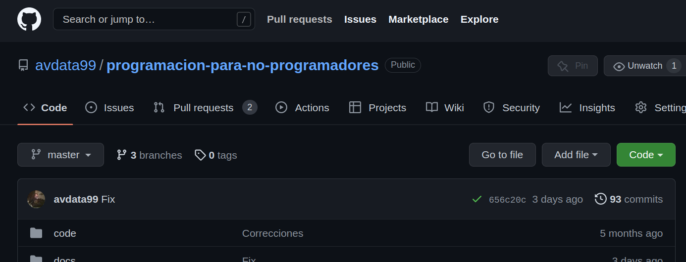
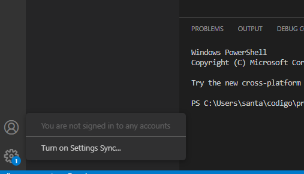
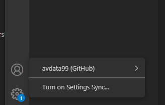
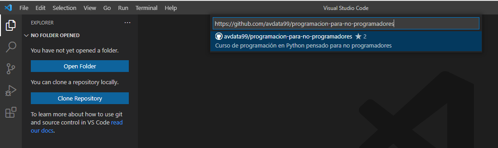
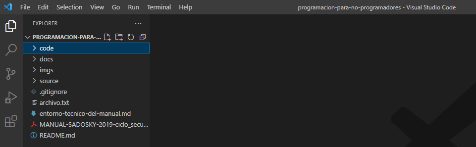

Git en la nube: GitHub
Luego de la aparición de Git surgieron muchos servicios que permitían mantener una copia de tus repositorios en internet. Todas las empresas de software usan alguno de estos servicios por lo que trabajar con desarrollador requiere siempre conocer y usar estos servicios.
El más popular (pero no el único) de ellos actualmente es GitHub y es por esto que lo usaremos en este curso. Es importante que accedas al sitio y crees una cuenta (son gratuitas para la mayoría de sus funciones).
Un ejemplo de repositorio de código es este mismo curso. Puedes ver el repositorio que incluye este manual y documentación aquí.
GitHub desde Visual Studio Code
Visual Studio Code incluye la posibilidad de conectar tu cuenta de GitHub. Estoy es muy útil para conectarte a repositorios de código y enviar tus sugerencias o cambios.
Despues de un proceso de conectar tu cuenta de GitHub, esta ya (casi) quedará disponible para usar desde Visual Studio Code.
Finalmente, debes ir al menú View -> Terminal y colocar:
git config --global user.email "tu-email@xxx.com"
git config --global user.name "tu_nombre_de_usuario"
Para comenzar a trabajar sobre un repositorio de código debes usar el buscador o colocar la URL del repositorio: https://github.com/avdata99/programacion-para-no-programadores
Luego de definir en que carpeta quedará tu copia de este repositorio podrás comenzar a usarlo.
Tarea
Compartí con tus compañeros de curso tu nombre de usuario en GitHub para comenzar a trabajar en equipo.
Conectar tu cuenta de GitHub a Visual Studio Code.
Clonar el repositorio del curso